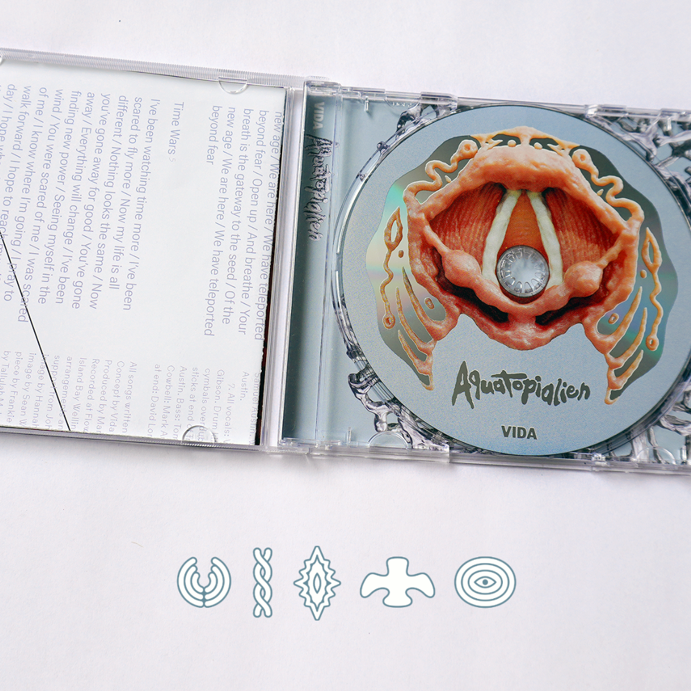
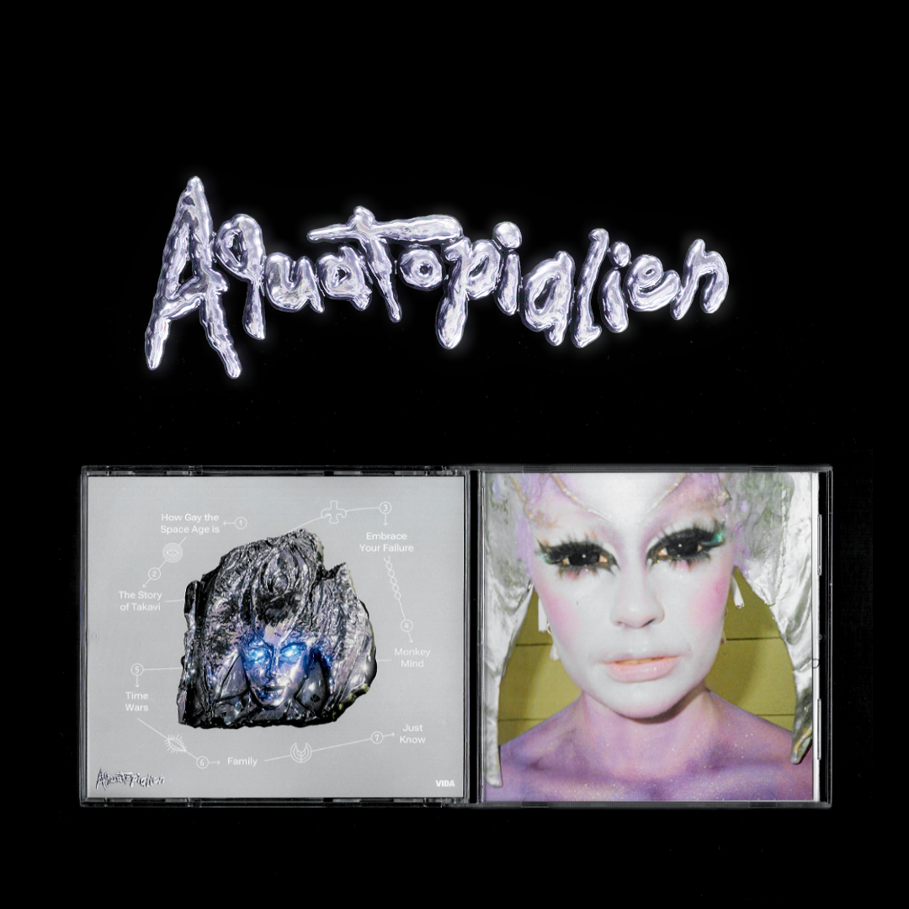
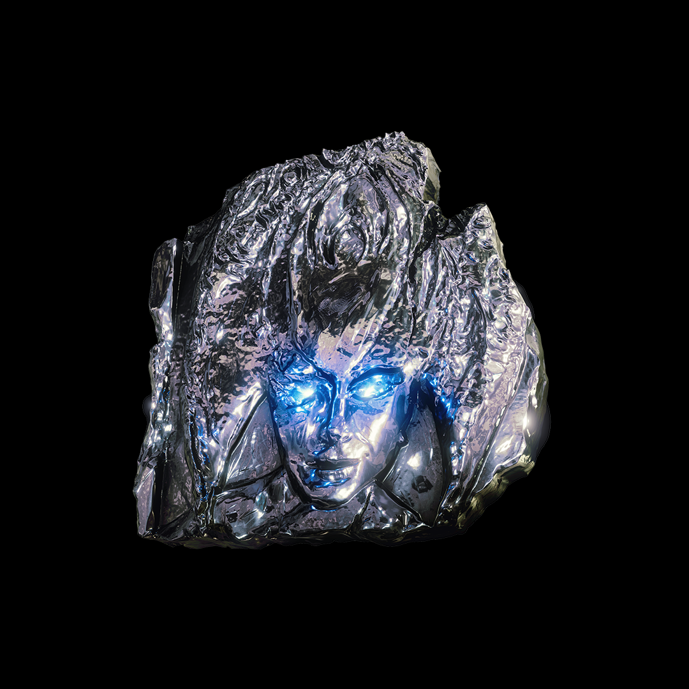
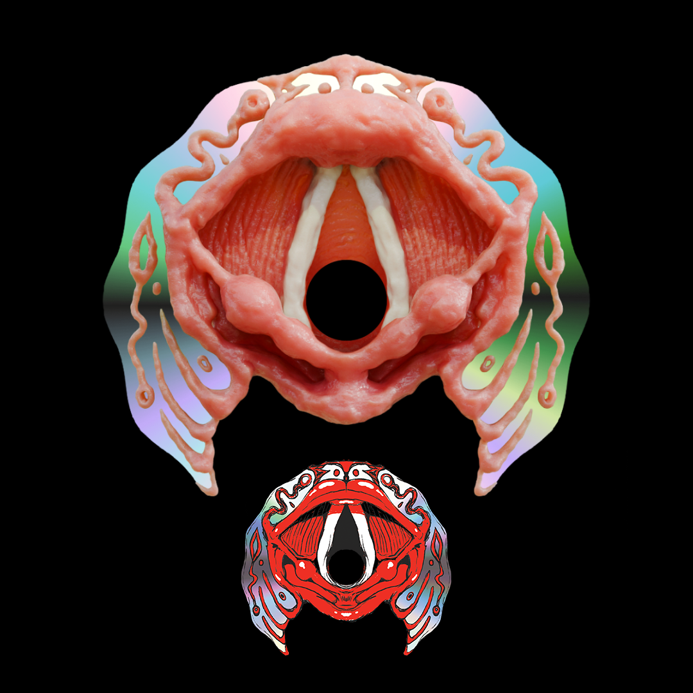

Aquatopialien
2025

VIDAw is a shape-shifting musician, oracular alchemist, and world- builder. Based in Aotearoa and rooted in an ecology of ritual, their immersive, genre-defying performances blur the lines between ceremony and spectacle.



Additonal credits: Hannah lynch photos etc.